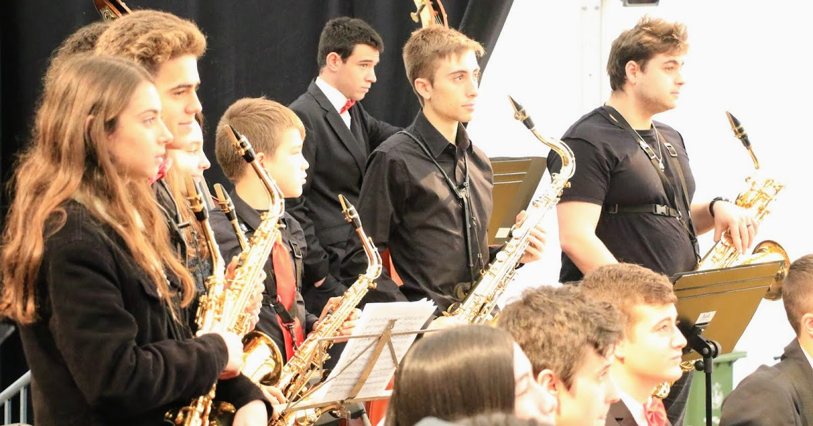
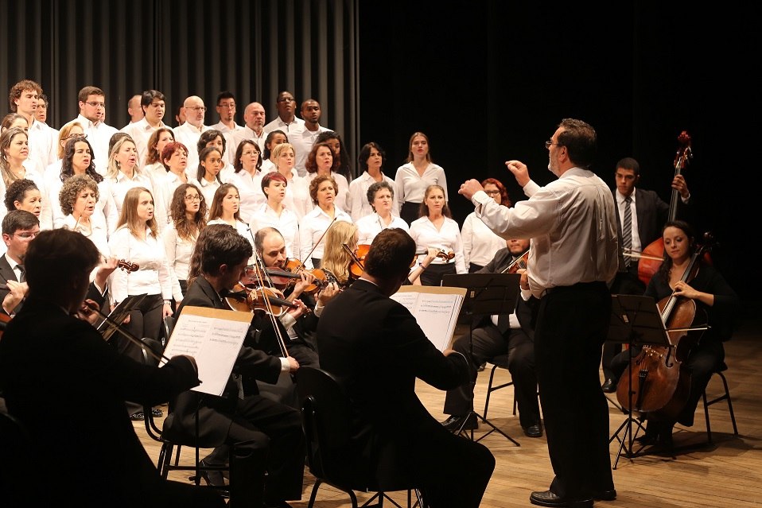

Conservatório Bom Solo
Quem somos nós?

O Conservatório Bom Solo é um centro de formação musical especializado em música clássica, localizado na cidade de São Paulo. Nossa missão é preparar músicos para atuar profissionalmente como intérpretes, regentes, cantores e educadores, com uma base técnica sólida e sensibilidade artística refinada.
Com professores altamente qualificados e atuantes no cenário da música erudita, oferecemos cursos em instrumentos de orquestra, piano, canto lírico, teoria musical, harmonia, música de câmara e prática de conjunto.
A formação no Bom Solo vai além da sala de aula. Nossos alunos se apresentam regularmente em palcos de destaque, como a Sala São Paulo e o Theatro Municipal, vivenciando desde cedo a rotina profissional de um músico clássico.
Unimos tradição e inovação para formar artistas preparados para os desafios do presente — e inspirados pelo legado da grande música de concerto.
Qual é a nossa proposta?
O Conservatório Bom Solo tem como objetivo promover a excelência no ensino da música clássica, formando músicos tecnicamente preparados, artisticamente sensíveis e culturalmente conscientes.
Nossa missão é oferecer uma formação sólida, pautada na tradição do repertório clássico, aliando rigor pedagógico a um ambiente acolhedor e inspirador. Acreditamos na música como instrumento de desenvolvimento humano, intelectual e social, e trabalhamos para que nossos alunos se tornem agentes de cultura dentro e fora dos palcos.
Qual é a nossa proposta?

O Conservatório Bom Solo tem orgulho de manter uma Orquestra e um Coro próprios, formados por alunos, professores e músicos convidados, como parte fundamental da formação artística oferecida pela instituição.
A Orquestra Bom Solo atua como laboratório prático para o estudo do repertório sinfônico, camerístico e operístico, proporcionando aos alunos a vivência essencial da performance em conjunto, com foco em disciplina, escuta coletiva e interpretação estilística.
O Coro Bom Solo é dedicado ao repertório vocal erudito, abrangendo desde a música renascentista até composições contemporâneas. Além de desenvolver a técnica vocal e a musicalidade de seus integrantes, o coro contribui ativamente para a vida cultural da instituição, participando de concertos, projetos didáticos e apresentações públicas.
Ambos os grupos desempenham um papel central na missão do conservatório de formar músicos completos e de promover o acesso à música clássica de qualidade na comunidade.